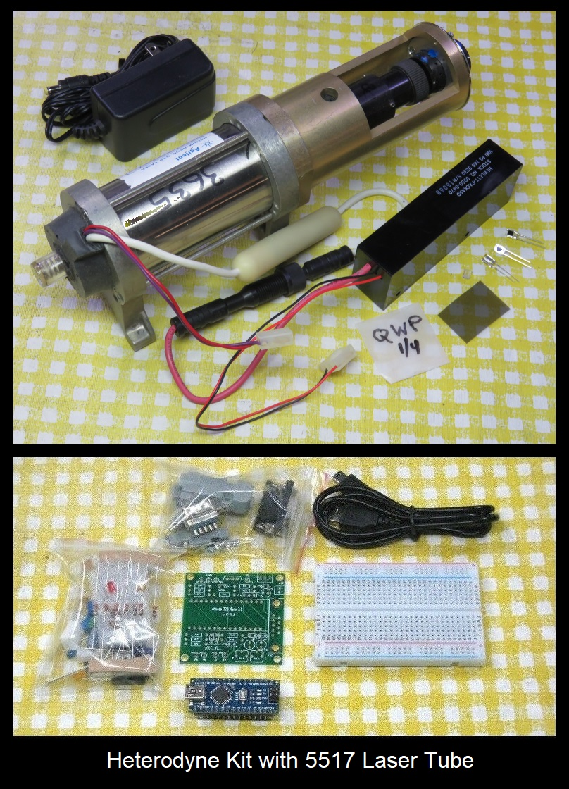
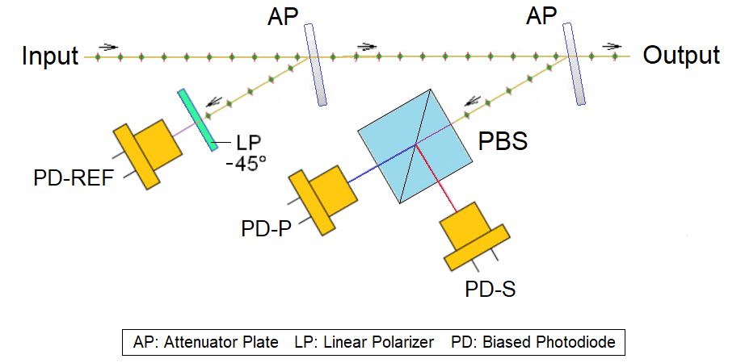
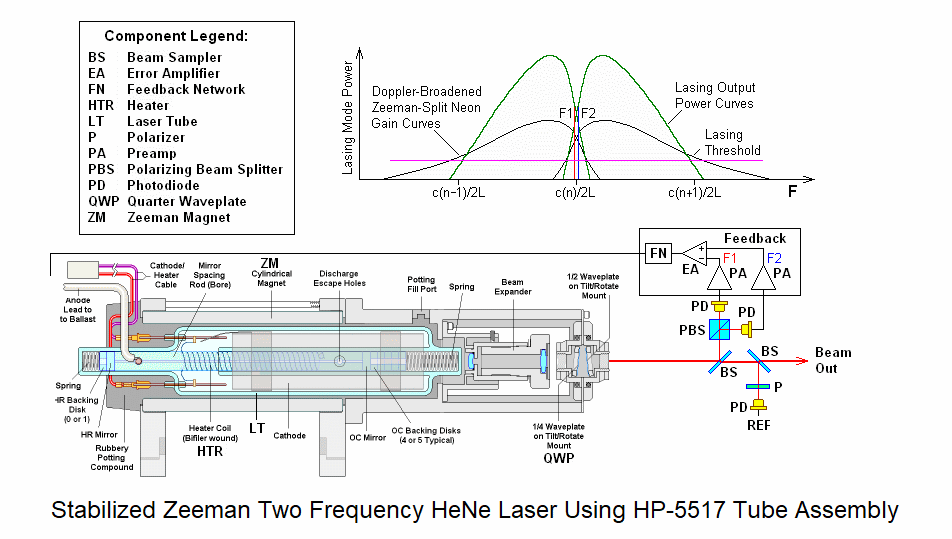
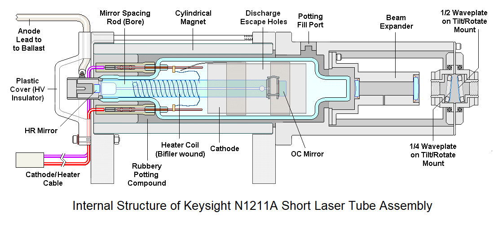
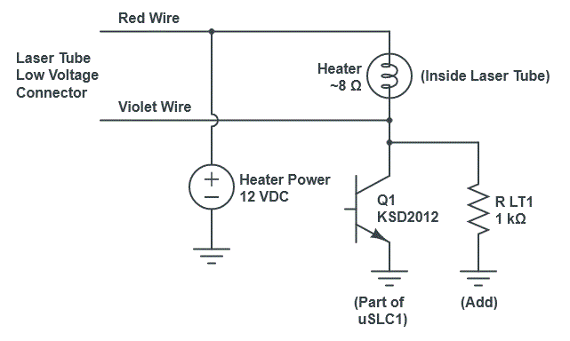
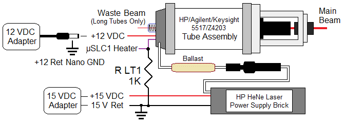

The two-frequency Zeeman-split HeNe laser is the key component in many
high precision interferometer-based metrology systems
used in applications like stage positioning for
semiconductor wafer fabrication. In a nutshell,
when an axial magnetic field is applied to a short random polarized HeNe laser
tube, a longitudinal mode will be split into right circular and left
circular polarized components with a difference in optical frequency
of up to a few MHz. When constructing an interferometer, having the
difference signal, F2-F1, provides advnatages over a single frequency
laser in terms of immunity to noise and elimination of periodic adjustments
as the laser ages.
This document contains notes on the construction of a two-frequency Zeeman
HeNe laser using the tube assembly from a Hewlett Packard (HP), Agilent, or
Keysight 5517 B/C/D laser or similar Z4303/N1211A tube. These are fully
functional but do
not meet specifications for any standard model and/or have an output power
lower than minimumm spec. But they are still useful for
education/research/experiments. The photos below show a set of typical parts:

(The style of some parts may vary slightly from what's shown in the photo.
There is no non-Arduino version of this kit but the needed tube assembly
and power supply can be purchases separately.)
The following laser components are included (top pane of photo):
Hewlett Packard (HP), Agilent, or Keysight tube assembly from 5517B/C/D
laser. They may also be from 5501B or Z4203/N1211A lasers which
have virtually the same glass HeNe laser tube but it has
been designed to achieve the split (REF) frequency range for the specific
model. The latter differs only in the mounting.
The tube assembly has connectors for
the high voltage to the laser tube via the ballast resistor
and a cable for the negative/cathode return and internal heater.
They may include a beam collimator providing a 1-2 mm beam, suitable for use
up to 2 feet or so, or beam expander providing a beam up to 9 mm. A separate
beam expander can always be used to, well, expand the narrow beam. ;-) BUt
3 or 4 mm beam expanders may be provided upon request.
HeNe laser power supply brick from/for the above lasers with a special
connector for the high voltage anode of the tube
and wires (with or without a connector) for the cathode return current.
Regulated 15 VDC wall adapter for the HeNe laser power supply brick
and optical receivers. These will probably have wires with no connector.
Confirm polarity with a DMM as styles may vary. REVERSE POLARITY WILL
FRY THE BRICK AND POSSIBLY THE ADAPTER AS WELL! The brick may appear to
work but without current regulation, so the tube current will be off the
chart and ruin the tube quickly. If the 15 VDC adapter has
a barrel connector for 15 VDC, it may need to be cut off as mating
connectors are not readily available.
12 VDC wall adapter for the heater. This may be a 12 VDC regulated
power supply or an LED lamp supply. In the latter case, it may have a built
in electronic ballast typically of up to a few ohms so the output is not
constant with increasing current. For the heater, this doesn't matter
and actually adds some protection against shorts. The 12 VDC adapter
will probably have a barrel connector for 12 VDC along with a mating
jack or screw terminal block so it can be unplugged. Most are of the
regulated type.
Polarizing Beam Splitter (PBS) Cube and a pair of silicon photodiodes
(PDs) for the feedback.
Two variable attenuator plates that may be used as a beam samplers
for REF and feedback.
Piece of linear polarizer film and photodiode for monitoring the Zeeman
beat on an oscilloscope or frequency counter.
Quarter WavePlate (QWP) to convert circular to linear polarization if
using the waste beam for feedback or REF detection. (The waste beam is
only present in the so-called "Long" tubes with the rubbery potting
compound at the back-end, and the power in
the waste beam may be too low to be useful for either purpose in any case.
The "Short" tubes with a plastic cover on the back block the waste beam
internally.) THESE ARE EXTREMELY THIN AND FRAGILE and
should be sttached to a support like a washer for protection. Since the
beam diameter is less than 1 mm coming out of the tube, the QWPs can be
cut into smaller pieces and mounted on small washers. ;-)
There may be several other samll parts that will aid in construction
(not shown).
The following control components are included in the Arduino version ONLY
(bottom pane of photo):
Atmega Nano 3.0 Arduino-compatibel microprocessor board and USB cable.
Solderless breadboard to contruct prototype along with V1.1 PCB for
the final version (either may be used though going directly to the PCB
may be less trouble as solderless breadboards are not as reliable).
Electronic parts including resistors, capacitors, connectors, heater
driver transistor, LEDs, etc.
See important CAUTION
about powering the Atmega board in the µSLC1 manual. Specifically,
DO NOT power the board using +12 VDC to VIN at the same time the USB
is plugged in. Only use 12 VDC for the heater. While this is supposed
to work, doing so killed (probably) the USB chip on one of my Atmega
boards when the 12 V supply was switched on. The cause is not
known. When the controller is NOT attached to USB, then it's OK to use
VIN to power the board.
What you will need to provide:
Mounting scheme for the tube assembly, for the beam sampler(s)
to divert a portion of the beam for REF and feedback, and for the
PBS and PDs:
The tube assembly has a frame with metal "feet" with M4 threaded holes.
Using these is the most convenient way of securing it to a baseplate.
The beam sampler and PBS can be glued to posts with the PDs glued to its
back and side, or to some simple plastic or metal enclosure of your choice.
The PDs can also be installed on a piece of Perf. board with the PBS glued
between them. A spacer (made from a piece of Perf. board or something
similar) may be required to lift the PBS to the optimum height. Take care
with the PD lead wires as they are easily broken. Very thin wire (e.g.,
AWG #30) is recommended. Do NOT apply any stress
while soldering as the heat can melt the plastic causing them to shift
and break internally. After soldering, confirm that the PDs still behave
like diodes with a DMM.
Note that when using the Attenuator Plate (AP) as a beam sampler, it
should oriented at a small angle (much less than 45 degrees) to minimize
effects on polarization. 15 to 20 degrees is recommended as shown below:

Dual Beam Sampler for REF and Feedback using Attenuator Platse and
Dual Polarization Detector Assembly Built on Perf. Board
A laser power meter or other means of measuring output power
will be desirable to monitor the behavior of the modes as the tube warms
before µSLC1 is running. The laser power meter can
simply be a silicon photodiode and multimeter or microammeter since
actual power measurements aren't needed. But a laser power meter with
a graphical display, or a PC with Data Acquisition System (DAS) is best to be
able to observe the mode sweep in real time. A basic 4 channel USB DAS can be
purchased for as little as $60 delivered from
DATAQ. Check out their "Low Cost Data
Acquisition Start(er) Kits". These are similar to what I have used for
most of my data capture.
Once the µSLC1 Arduino controller with the Windows GUI is
operational, it can serve this purpose.
Oscilloscope and/or frequency counter to measure the Zeeman beat.
Almost any type of instrument will be satisfactory as the maximum
frequency is under 2 MHz. µSLC1 can also display the beat frequency
if the signal is TTL compatible.
Optional: Components to build an actual interferometer using your
two-freuqency laser.
Organization of two-frequency Zeeman-split HeNe Laser:
The diagram below shows a system similar to what may be constructed using
parts in this kit and readily available materials and electronics.

Many variations are possible. The Arduino implements the
electronics inside the box. The REF Signal monitor is shown using
the waste beam but could also be in the main beam (the polarizer would then
need to be at 45 degrees). However, that would require an additional beam
sampler plate (included if needed) which would decrease the output power
slightly. The diagram above shows the so-called "Long" tube. The "Short"
tube construction is shown below:

The main practical difference is that there is no waste beam from the
Short tube so beam samplers must be used for both REF and feedback.
Power and wiring:
The use of the HP 5517 tube assembly simplifies the wiring and makes
shocking experiences less likely since the high voltage is safely
enclosed with proper connectors.
IMPORTANT: Since the tube current passes
through the red/violet wires, it is critical that it has a place to go.
Thus the resistor "R LT1" is essential to provide a path bypassing the
heater drive transistor (Q1) on the µSLC1 PCB. Without a bypass,
the tube current will attempt to go through the transistor when it is
off and may blow it and possibly other stuff as well. The value is
not critical - anything from 100 to 2K ohms should be acceptable. But is
should be soldered directly across the tranistor so it can't come loose.


Wiring of Hewlett Packard (HP), Agilent, or Keysight Tube Assembly
The black HV male connector attached to the laser tube via the large
biege ballast resistor should be inserted into the mating female connector
attached to the power supply brick, and then the black ring should be
tightened snugly. Do not overtighten. It's just like how sex works. ;-)
The two pin connector on the HeNe laser power supply
brick goes to the 15 VDC wall adapter.
Red is positive. If using a screw terminal adapter, cut off the connector
and strip the wires to about 1/4".
Unscrew the positive terminal a couple turns, insert the stripped black
wire into the screw terminal plus (+), then tighten the screw.
The black wire from the brick must be electrically connected to the
purple/violet wire from the laser tube. Use an extension wire if necessary.
They can be twisted together and installed in the screw terminal minus (-).
If using the Arduino, the negative of the DC power pack for the laser
and for the heater must NOT be connected together.
The positive output of the 12 VDC adapter goes to the black wire of
the brick.
The negative output of the 12 VDC adapter goes to GND of the Nano board.
The red wire from the tube assembly goes to the HEATER input of the
Nano board (to the collector of the NPN power transistor).
Test the tube and wiring by powering ONLY the 15 VDC adapter. The tube
should light between instantly to after a few seconds. Some tubes may
take longer and shining a flashlight on the back of the tube may help
some reluctant tubes to start. ;-)
There should be an orange glow inside the tube (most visible at the back)
and a red laser beam out the front. It should not flicker, sputter, or go
on and off. If it does, which connections and confirm that the correct
adapter is being used and the voltage to the brick is between 14 and 16 VDC.
The Quarter WavePlates (QWPs):
The raw output of the HeNe laser tube in the Zeeman magnet consists of lasing
modes that are left and right circularly polarized. For these to be useful
for stabilization feedback and in an interferometer, it is necessary to
convert them to orthogonal linearly polarized modes. This is normally
done with a Quarter WavePlate (QWP) oriented with its optical axis at 45
degrees to the base (X and Y axes). These tube assemblies actually have
both a QWP and Hall WavePlate (HWP) so the conversion can be optimized
without having to rotate the tube. DO NOT ATTEMPT TO ADJUST THE BLACK
RINGS OF THE WAVEPLATE ASSEMBLY!!!! They are set optimally and without
detailed instructions, restoring operation is hopeless. ;( ;-)
ALSO, DO NOT REMOVE IT WITHOUT LABELLING ITS ORIENTATION. Flipping it or
rotating it 60 degrees will result in unexpected behavior. It has been
set to provide optimal separation of the two polarized outputs aligned
with the X and Y axes of the laser.
If using the waste beam for feedback (which is unlikely as noted above),
an external QWP will need to be installed at the back of the tube.
Constructing the beat detector: This one is just for testing or
if µSLC1 is not being uused:
Determine the anode and cathode of one of the photodiodes with a
multimeter. (I can never remember which way it goes!)
Wire the PD to a 9 V battery or the 5 VDC power pack and load
resistor as shown:
PD
+5 to 9 VDC o-----------|<|---------+--------o Output
C A |
/
R1 \ Scope or
/ Counter
\
|
Return o-----------------------+--------o Ground
The suggested value for R1 is 2.7K which is a compromise between largest
amplitude and frequency response. Feel free to experiment with higher or
lower values.
Use this detector to view the Zeeman beat or measure its frequency from the
tube in magnet. A polarizer must be placed in front of the PD at 45 degrees
for the main beam, but its orientation doesn't matter if using the waste beam.
Since the tube isn't locked and stabilized, the beat will come and go so
you will have to catch it each time. ;-) Depending on the specific tube
and split frequency, it may only be present for a small part of the mode
sweep cycle.
Note that while µSLC1 has a split (or "REF") frequency input which
will display in the Main Window of the GUI, it requires a TTL-compatible
signal. This can be generated by an HP/Agilent optical receiver, SG-OR3 ONLY
if one of its output capacitors is removed and bypassed, or an
equivalent home-built circuit. Either REF or REF- can be sent to the
µSLC1 REF input. Do NOT use an AC-coupled output (capacitor or
transformer) as bad things may happen.
Test the tube for Zeeman behavior:
Power the tube. To the unaided eye, it will appear to
lase normally just like a tube without a magnet.
Aim the main beam through the polarizer to the PD.
Video of Typical Zeeman Beat Signal
As the tube warms up and the cavity length increases, a beat will appear
periodically during mode sweep varying in frequency. Depending on the
tube, the beat will only be present for a portion
of the cycle, and will change frequency somewhat during this time.
With a greater magnetic field, the percentage of the cycle over which there
is a beat decreases. For example, it may be 50 percent for a tube
with a low magnetic field and peak frequency of 1 MHz but less than
10 percent for an HP-5517D laser which locks with a ~3.75 MHz split frequency.
If 5-10 VDC is applied to the heater, the rate
of the mode sweep will greatly increase since the tube is expanding faster,
which is how the video was made.
Confirm that the QWPs are Correctly Adjusted:
For HP tubes, there should be no need to adjust anything but it won't
hurt to confirm. The shipping company may have decided to have fun
and twiddle it. ;-)
Put a linear polarizer oriented with its axis at 45 degrees
between the laser and biased photodiode connected to an oscilloscope.
Confirm that the beat signal is maximized with the
LP at 45 degrees.
Confirm that the beat signal is minimiazed with the
LP at 0 or 90 degrees.
Since the tube isn't locked and stabilized, the beat will come and go so
you will have to catch it each time. ;-)
Note that while µSLC1 has a split (or "REF") frequency input which
will display in the Main Window of the GUI, it requires a TTL-compatible
signal. This kit currently doesn't include parts
for that, sorry. A simple circuit that should
be suitable can be found at Teletrac 150 Reference
Receiver Schematic. Either REF or REF- can be sent to the µSLC1
REF input. DO NOT connect an optical receiver like an HP-10780 or SG-OR3
with an AC-coupled signal directly as bad things may happen.
Testing the photodiodes response to laser light:
This is used to set up the feedback optics and electronics.
The following assumes that the QWP has been installed to conver the
circular polarization to linear polarization and the resultin polarization
axes are known.
To test the response of the silicon PhotoDiodes (PDs) included in these kits,
a simple test circuit using a few resistors, a 5 VDC power supply
(or USB charger cube), and DMM can be constructed before connecting the
stabilization controller. To determine the polarity of the PDs, use the DMM
on the "Diode Test" range across the pins: The voltage drop will be between
0.5 and 0.6 V if the red probe is connected to the anode. The polarity is
usually opposite for a VOM but they are only found in museums these days. ;-)
Wire up a test circuit as follows:
V1
o
R Protect PD1 | R Load 1
+5 VDC o----/\/\----+-----|<|---+---/\/\-----+
| |
| V2 |
| o |
| PD2 | R Load 2 |
+-----|<|---o---/\/\-----+
|
|
GND/RET o-------------------------------------+
+5 VDC through a 200 ohm to 1K ohm resistor to the cathodes of both
photodiodes. This resistor simply provides protection to limit current
through the PDs should they be backwards or something unfortunate occurs.
But if too large, they will limit the response to light so don't go
above 1K ohms.
One end each of a pair of load resistors to the anodes of both PDs.
Their value will depend on the laser power. The response of a silicon PD
is typically between 0.3 and 0.4 mA/mW. So select load resistors (or
trim-pots) of appropriate value so that there will be a detectable response:
Main beam of 150-250 µW: 100K ohms.
Sampled main beam of 25-40 µW: 500K ohms.
Waste beam of 0.01 to 0.03 mW: 1M ohms.
The other end of the load resistors go to GND/RET of the 5 VDC supply.
Monitor the voltage across each load resistor with the DMM on the
DCV range (0 to 5 V typical). Adjust the value of the load resistors
if needed.
With the beam blocked to each PD, the voltage across its load resistor
should be close to 0 V.
With the beam incident on the PD, there should be a detectable response
whose value will depend on the actual laser power and load resistor. With
a 5 VDC supply, the available range is from 0 to slightly below 5 V.
If the PBS cube (or a linear polarizer) in inserted in the beam AND
the tube is rotated so the polarization axes line up with the polarizer, the
voltage will vary during mode sweep.
Note that with the magnet installed, the appearance of the mode sweep is
distinctively different than it is without them.
Closing the loop:
To stabilize the laser so that the position of the modes is under automatic
control with a Zeeman beat requires some electronics to first run the tube
in "Preheat Mode" so that the temperature of the tube/heater combination
levels off somewhat above ambient, and then to "Lock Mode" to allow the
output of one or both photodiodes to take control.
If you're willing to switch from Preheat to Lock mode manually, the
required circuit can be as simple as 2 basic electronic components - a
resistor and a power MOSFET. This won't have superior performance but
is quick and easy to get working and therefore will provide nearly immediate
gratification. :)
However, the Arduino kit includes components to construct a fully automatic
controller using an Atmega Nano 3.0 Arduino-compatible microprocessor
platform.
However, unlike the non-Zeeman case where one can lock on either side of the
gain curve depending on the polarity of the error signal, with the Zeeman
laser, there is only one place to obtain a beat. In other words, it's
possible to lock so that the two components - F1 and F2 - are equal in two
locations. One is where the Zeeman-split
longitudinal mode is between the split gain curves
and there will be a beat. The other is where there are actually two
separate (non-Zeeman) longitudinal modes with equal amplitude but far far away
at the longitudinal mode spacing of the laser tube. In that case, there will
be no beat without a fancy high speed detector since the frequency would
be over 1 GHz.
The horizontal and vertical mode signals
from the PBS should have a decent amplitude p-p and will be roughly 180 degrees
out of phase, something like the screen shot below from the µSLC1 GUI:
µSLC1 Display Showing Zeeman Mode Behavior Near End of Locking
The ragged green and orange plots of of the modes is characteristic of
Axial Zeeman behavior. The QWP orientation should be set to
maximize their amplitude.
If using the waste beam for feedback, test and adjust both QWPs and label
their orientation. Then transfer one to the main beam using the same
orientation. (This is probably not recommended due to the lower output
power of the waste beam.)
Enhancements/experiments:
Look at the output using a Scanning Fabry-Perot Interferometer (SFPI)
both during mode sweep and when locked. Are there any modes besides the
Zeeman-split mode present? When? For info on SFPIs, see:
Scanning Fabry-Perot Interferometers.
Inexpensive kits are available to construct SFPIs (see my other listings),
though building that can resolve the twin Zeeman-split lasing lines would
be a challenge. Doable but difficult.
Experiment with the strength of the magnetic field and its placement.
The HP magnet is in three sections so 1 or 2 of them could be used. The
field can be reduced modestly using soft iron shims and increased using
external magnets. (However, there is some risk of demagnetizing the
Alnico magnet segments separating them and using shims or external magnets.)
Install your Zeeman laser assembly in an HP/Agilent laser body. Although
the HP/Agilent control PCB locking scheme is not ideal for a non-HP/Agilent
tube, it will work. Inquire for details. ;-)